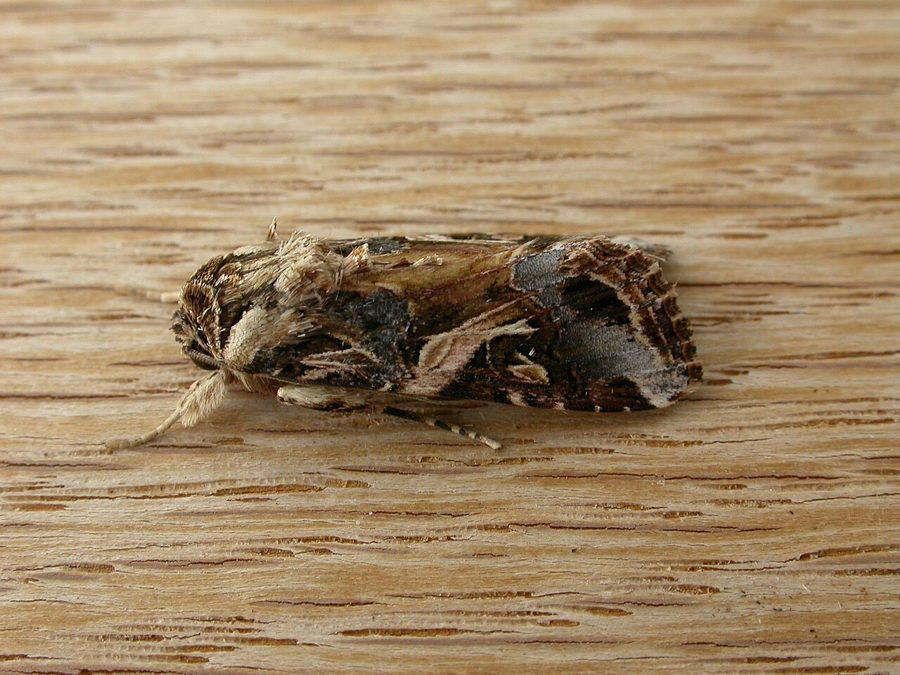

सेना पतंगाTobacco Cutworm
Spodoptera litura · Noctuidae · INS-0040

- Scientific name
- Spodoptera litura (Fabricius, 1775)
- Family
- Noctuidae
- Hindi
- सेना पतंगा
- Status here
- native
- IUCN
- not evaluated
When to look कब देखें
Present all year.
सेना पतंगा / Tobacco Cutworm
Spodoptera litura (Fabricius, 1775) — Noctuidae
सेना पतंगा (टोबैको कटवर्म / तंबाकू की इल्ली) — पूर्वी उत्तर प्रदेश के कृषि क्षेत्रों, सब्जियों के बगीचों और नर्सरियों में पाया जाने वाला एक अत्यधिक विनाशकारी, बहुभक्षी (polyphagous) कीटभक्षी कीट है जो 120 से अधिक फसलों पर हमला करता है। इसकी सबसे विनाशकारी अवस्था इसकी इल्ली (caterpillar/larva) होती है, जो रात के समय सक्रिय होकर छोटे पौधों और अंकुरित फसलों को ज़मीन की सतह के पास से काट देती है (cutworm habit)। वयस्क पतंगा (moth) मध्यम आकार का, धूसर-भूरे रंग का होता है जिसके अगले पंखों पर जटिल पैटर्न बने होते हैं। इसकी इल्ली लगभग 40-45 मिमी लंबी होती है, जिसका रंग हरे से लेकर गहरे भूरे रंग तक हो सकता है, और इसके शरीर पर हल्की पीली धारियाँ बनी होती हैं। यह टमाटर, बैंगन, मिर्च, कपास, धान और कई प्रकार की सब्जियों को भारी नुकसान पहुंचाता है।
Quick Identification त्वरित पहचान
| Feature | Description |
|---|---|
| Adult Moth | Grey-brown forewings with wavy golden-yellow and white lines; hindwings are semi-translucent white with dark margins |
| Larval Stage | Smooth, hairless caterpillar; body is dark green to brown-black with bright yellow dorsal and lateral stripes |
| Larval Marks | Pairs of black crescent-shaped spots on the dorsal side of each abdominal segment |
| Behaviour | Caterpillars hide in the soil during the day and feed voraciously at night |
| Damage Type | Complete cutting of young seedlings at the base, and skeletonization of mature leaves |
Field tip: Inspect vegetable gardens or crop margins at night with a flashlight. Look for dark, striped caterpillars feeding on leaves or cutting seedlings near the soil line. During the day, dig slightly around the base of damaged plants to find them curled up in the loose soil. The female adult is shown in the field tip.
Morphology आकारिकी
Biometrics (typical measurements of adults and larvae in the northern Indian plains):
| Stage / Part | Measurement |
|---|---|
| Adult body length | 15–20 mm |
| Adult wingspan | 30–38 mm |
| Mature larval length | 40–45 mm |
| Egg diameter | 0.4–0.6 mm |
| Pupal length | 15–20 mm |
| Larval weight (mature) | 150–250 mg |
Adult Moth: The forewings are grey-brown, displaying a complex, beautiful pattern of wavy light brown, white, and golden-yellow bands. The hindwings are pale, semi-translucent white, with a thin dark brown margin. The thorax is covered with dense, hairy grey-brown scales, and the abdomen is smooth and dull grey-brown.
Egg: Spherical, slightly flattened, ribbed, creamy-white in color, laid in large clusters covered with brownish hair-like scales from the female's abdomen.
Pupa: Smooth, shiny, reddish-brown, ending in two short terminal spines (cremaster), formed in an earthen chamber in the soil.
Larval Stage
The caterpillar passes through six developmental stages (instars).
- Early instars: Newly hatched larvae are tiny (1.5–3 mm), light green, and feed in groups on the underside of leaves, scraping the green tissue and leaving a papery transparent layer (skeletonization).
- Late instars: As they grow (4th to 6th instar, 25–45 mm), they become solitary and turn dark green, grey, or blackish-brown. They develop a prominent pair of black crescent-shaped spots on the first and eighth abdominal segments, along with a bright yellow longitudinal line down each side. The head is reddish-brown or black.
Behaviour & Ecology व्यवहार और पारिस्थितिकी
- Nocturnal feeding: Larvae are highly sensitive to light. They hide under soil clods or leaf debris during the day to avoid heat and predators, and emerge at dusk to climb crop plants and feed all night.
- Polyphagy: Highly adaptable feeder. It can digest chemical defense compounds from a wide range of plant families, allowing it to move from weeds to cultivated crops easily.
- Gregarious early phase: Young larvae feed close together in dense clusters. If disturbed, they spin silk threads to drop down to the ground to hide in the soil.
Life Cycle / Phenology जीवन चक्र
- Reproduction: Multivoltine (produces 6 to 8 generations per year in UP's warm climate).
- Oviposition: Females lay 200–300 eggs in a cluster on the underside of host leaves, covering them with yellow-brown scales.
- Developmental times (during monsoon months at 28–32°C):
- Egg incubation: 3 to 4 days.
- Larval period: 15 to 20 days.
- Pupation: Occurs in loose soil at a depth of 3–5 cm; pupal stage lasts 7 to 10 days.
- Adult lifespan: 7 to 10 days, during which they mate and lay eggs.
Host Plants or Prey आहार
Primary crop hosts:
- Solanaceous crops: Brinjal (Solanum melongena), Tomato (Solanum lycopersicum), and Chilli (Capsicum annuum).
- Fiber & Grain crops: Cotton (Gossypium hirsutum), paddy, maize, and legumes.
- Weeds: Field Bindweed (Convolvulus arvensis) and castor.
Predators / Natural Enemies शत्रु
- Parasitoids: Small wasps (like Apanteles species) lay eggs inside the caterpillars; the wasp larvae consume the host from within.
- Predators: House Sparrows (Passer domesticus), cattle egrets, and ground beetles eat the larvae.
- Fungal Pathogens: Nomuraea rileyi infects the larvae during wet weather, covering them in green fungal spores.
Agricultural / Human Relevance कृषि प्रासंगिकता
Major agricultural pest. The Tobacco Cutworm causes severe financial losses to vegetable growers in eastern UP. By cutting young seedlings in nurseries, it can destroy entire plots in a few nights.
Control methods: Farmers in Basti use pheromone traps to capture adult moths, apply neem-seed kernel extract (NSKE) to repel larvae, and practice deep summer ploughing to expose pupae in the soil to birds and the sun. Chemical pesticides are also widely used, though the species has developed resistance to many common chemicals.
Expected Locally स्थानीय रूप से अपेक्षित
Not a field record. Written from published accounts for eastern Uttar Pradesh. No confirmed local sighting yet — if you have seen it, that is what the atlas needs.
अभी तक स्थानीय पुष्टि नहीं। यह विवरण प्रकाशित स्रोतों से है, किसी अवलोकन से नहीं।
A common agricultural pest throughout the Basti district. They are regularly observed in vegetable nurseries and crop fields in the Harraiya, Basti, and Vikramjot blocks. Farmers report heavy infestations in tomato and cauliflower crops during the post-monsoon planting season (September to November).
Distribution वितरण
Global range: Widespread across South Asia, Southeast Asia, East Asia, and Oceania.
In India: Found throughout all agricultural states and climatic zones.
In Uttar Pradesh: Abundant in all vegetable-growing and agricultural plains.
In Basti district / eastern UP: Widespread across all agricultural blocks.
Research Questions शोध प्रश्न
Anyone can investigate these | कोई भी इन प्रश्नों की जाँच कर सकता है
- How many young seedlings can a single mature cutworm larva cut down in a nursery in one night? — Record damage rates in controlled trays.
- What is the preference of Tobacco Cutworm larvae for feeding on Tomato leaves versus Field Bindweed leaves? / सेना पतंगा की इल्ली टमाटर के पत्तों और हिरनखुरी (Field Bindweed) के पत्तों में से किसे खाना अधिक पसंद करती है? — Conduct laboratory choice tests.
- Does deep summer ploughing reduce the count of emerging moths in the next crop cycle in your block? — Compare ploughed and unploughed fields.
- How many caterpillars can a single visiting Cattle Egret consume in a newly irrigated field? — Monitor egret foraging sequences.
- Does the use of light traps at night significantly reduce the egg-laying rate of cutworm moths in vegetable gardens? / क्या रात में प्रकाश प्रपंच (light traps) लगाने से सब्जियों के बगीचों में सेना पतंगा के अंडे देने की दर कम हो जाती है? — Track egg counts on host plants.
Similar Species मिलती-जुलती प्रजातियाँ
| Species | How to tell apart | हिंदी |
|---|---|---|
| Yellow Stem Borer (Scirpophaga incertulas) | Adult is plain white with a black spot; larva is yellowish and lives strictly inside rice stems | पीला तनाछेदक — सफेद पतंगा, इल्ली धान के तने के अंदर |
| Gram Pod Borer (Helicoverpa armigera) | Larva has sparse hairs, lacks black crescent markings; feeds inside pods and fruits | फल छेदक — इल्ली बालों वाली, फल के अंदर घुसना |
| Rice Leaf Folder (Cnaphalocrocis medinalis) | Larva rolls leaf blades with silk and feeds inside the roll; much smaller | पत्ती लपेटक — इल्ली पत्ते को लपेटकर रहना |
Field rule: Medium-sized grey-brown moth with wavy golden lines on forewings, whose caterpillars are dark green/brown with yellow stripes and black crescent spots, hiding in the soil during the day and cutting plants at night, is the Tobacco Cutworm.
Taxonomy & Classification वर्गीकरण
Original description. Johann Christian Fabricius described the Tobacco Cutworm as Noctua litura in 1775 in his Systema Entomologiae (p. 613). The type locality was India. Guenée placed it in the genus Spodoptera in 1852. The genus name Spodoptera is derived from the Greek spododos (ash-coloured) and pteron (wing), referencing the grey wings. The specific name litura is Latin for a smear or mark, referring to the wing patterns.
Subspecies. Monotypic — no subspecies are currently recognised.
Family and order placement. Placed in the order Lepidoptera, superfamily Noctuoidea, family Noctuidae (owlet moths), subfamily Noctuinae.
Phylogenetic notes. Spodoptera litura is closely related to the African Cotton Leafworm (Spodoptera littoralis), with which it shares high morphological similarity.
IUCN status rationale. Not evaluated (NE) by the IUCN Red List, as is typical for widespread agricultural pest insects.
Photo Gallery फोटो गैलरी
References संदर्भ
- Fabricius, J. C. (1775). Systema Entomologiae. Flensburgi et Lipsiae, p. 613. [original description]
- Atwal, A. S. & Dhaliwal, G. S. (2015). Agricultural Pests of South Asia and Their Management. Kalyani Publishers, New Delhi.
- David, B. V. & Ramamurthy, V. V. (2016). Elements of Economic Entomology. Namrutha Publications, Chennai.
- Holloway, J. D. (1989). The Moths of Borneo. Part 12: Noctuidae. Malayan Nature Journal, Kuala Lumpur.
- CABI Crop Protection Compendium (2024). Spodoptera litura (tobacco cutworm) datasheet.
- GBIF Occurrence Data — Spodoptera litura, Uttar Pradesh (2010–2025).
Source file: species/fauna/insects/tobacco_cutworm.md